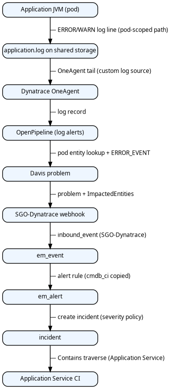
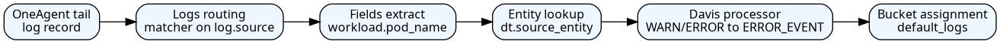

1. Purpose
This document is a prescriptive reference implementation for the Log to Incident use case: when an application emits an ERROR or WARN log line, observability detects it, ServiceNow Event Management ingests an event, an alert is raised on the correct infrastructure CI, and an incident is opened on the correct CSDM Application Service — using the Spark Service-Side Log Pattern (Kubernetes pods) or the Spark Client-Side Log Pattern (enterprise PySpark drivers).
The flow is vendor-specific only where the platforms require it (Dynatrace OpenPipeline, Service Graph Connector, CSDM). Application names, host names, and tenant identifiers in examples are illustrative. Implementors may automate these steps with Ansible, Terraform, REST APIs, or manual configuration.
Related background:
-
link:Observability - Service Management Documentation.tpg.md[Observability — Service Management Documentation]
1.1. Terminology: SGC vs SGO-Dynatrace
SGC (Service Graph Connector) is the ServiceNow connector product family. SGO is Service Graph Observability — the observability-specific variant delivered by the Store app Service Graph Connector for Observability – Dynatrace (sn_dynatrace_integ).
SGO-Dynatrace is the literal platform identifier, not a typo for SGC. ServiceNow uses it as:
-
the
source=query parameter on the Event Management inbound webhook URL; -
sys_object_source.nameand CMDBdiscovery_sourcefor imported Dynatrace entities; -
the filter value in business rules and EM rules (
source=SGO-Dynatrace).
Do not rename it to SGC-Dynatrace in configuration — the scoped app, existing CMDB rows, and webhook URLs expect the exact string SGO-Dynatrace.
1.2. Naming conventions (ServiceNow and Dynatrace specifications)
Prescriptive automation in this document must use technology- or pattern-specific names, not workload-specific names (for example Spark).
| Category | Rule |
|---|---|
ServiceNow Script Includes |
Name by pattern, not application: |
ServiceNow business rules |
Name by table + pattern: |
Dynatrace OpenPipeline attributes |
Use |
Davis |
Use |
ServiceNow |
Use |
Incident short description |
Use |
Lab examples |
Host names, pod names, CSDM identifiers ( |
Implementors deploying for a non-Kubernetes workload should substitute the appropriate pattern (for example Docker process group binding) while keeping the same separation: generic automation names, illustrative example values.
2. Log to Incident
2.1. Overview
Log to Incident supports two incident-mapping patterns that share the same Dynatrace OpenPipeline → Davis → ServiceNow Event Management pipeline (Steps 2–4) but diverge at CMDB prerequisites (Step 0), log emission (Step 1), and incident correlation (Step 5):
-
Spark Service-Side Log Pattern — Kubernetes pod logs;
incident.cmdb_civia Contains traversal from pod CI to Application Service. -
Spark Client-Side Log Pattern — PySpark driver logs on any host;
incident.cmdb_civia log path contract to a manual logical Application Service.
Use the comparison table below to see where each pattern applies and how incidents resolve. Detailed CMDB models and correlation algorithms appear in [step-0-cmdb-model] and [step-5-incident-correlation].
| Pattern | Where the workload runs | Incident CI resolution |
|---|---|---|
Service-side |
Kubernetes pods (Spark master, worker, history server, executors) |
Spark Service-Side Log Pattern — traverse Contains::Contained by from |
Client-side |
PySpark driver JVMs on any host (lab servers today; enterprise laptops and VMs tomorrow) |
Spark Client-Side Log Pattern — fixed path segment |
Both patterns require the full formatted log line in event, alert, and incident descriptions; Dynatrace ERROR or WARN detection; and incident.cmdb_ci = cmdb_ci_service_discovered (Application Service), not the infrastructure CI on the alert.
2.2. End-to-end flow
Both patterns follow the same observability path from application log line to ServiceNow incident. The figure below is the navigation map; pattern-specific configuration is called out in Steps 0, 1, and 5.

The step table maps each layer to the section that configures it. Steps 2–4 are shared; Steps 0, 1, and 5 include parallel Service-side and Client-side subsections.
| Step | Layer | Outcome |
|---|---|---|
0 |
ServiceNow CMDB / SGC |
Application Services, workload CIs, tags, |
1 |
Application / Log4j |
ERROR/WARN on a path that encodes workload identity (pod name or |
2 |
Dynatrace detection |
OpenPipeline matches WARN/ERROR |
3 |
Dynatrace → ServiceNow |
Webhook carries log line and impacted entity |
4 |
ServiceNow Event Management |
|
5 |
ServiceNow ITSM |
|
2.3. Step 0 — CMDB, CSDM, and SGC prerequisites
Before log problems can bind to infrastructure CIs and incidents to an Application Service, ServiceNow must contain the CSDM hierarchy, pattern-specific CMDB models ([step-0-cmdb-model]), and incident automation ([step-5-incident-correlation]).
2.3.1. ServiceNow — CSDM Application Services
Declare one Application Service per logical service boundary. Each workload that should roll up to that service carries a matching Kubernetes label (or Docker Compose label) synced to cmdb_key_value.
| Application Service identifier | Workload role | Tag on pod (label key=value) |
|---|---|---|
myapp-master |
Control plane StatefulSet |
servicenow.io/application-service-identifier=myapp-master |
myapp-api |
API Deployment |
servicenow.io/application-service-identifier=myapp-api |
myapp-worker-zone-a |
Worker pool on zone A |
servicenow.io/application-service-identifier=myapp-worker-zone-a |
myapp-worker-zone-b |
Worker pool on zone B |
servicenow.io/application-service-identifier=myapp-worker-zone-b |
Reference CSDM fragment (YAML — adapt identifiers and depends_on to your environment):
application_services:
- name: MyApp Worker (zone-a)
identifier: myapp-worker-zone-a
short_description: Application worker pool on Kubernetes zone A
operational_status: "1"
parent_business_service: My Application
platform: kubernetes
service_mapping: tags
discover: false
service_tier: compute
environment: production
location: dc-east
cluster: prod-k8s-east
namespace: myapp
owned_by: platform-teamCSDM deployment must create:
-
cmdb_ci_service_discovered rows and Business Application → Business Service → Application Service Contains hierarchy
-
Declared depends_on edges (shared infrastructure the service depends on)
-
tag_list on each tag-based Application Service (Service Mapping Operations REST) so the mapping engine knows which cmdb_key_value labels qualify
2.3.2. ServiceNow — Kubernetes pod CIs and tags
| Activity | Produces |
|---|---|
Kubernetes discovery / KVA resync |
cmdb_ci_kubernetes_pod rows for running pods |
Label sync to CMDB (REST upsert on pod CI) |
cmdb_key_value rows for servicenow.io/* labels copied from pod metadata.labels |
Pod manifest labels (single source of truth — apply at deploy time):
apiVersion: v1
kind: Pod
metadata:
name: myapp-worker-7d4f9b-xk2lm
labels:
servicenow.io/application-service-identifier: myapp-worker-zone-a
servicenow.io/environment: production
servicenow.io/location: dc-east
app.kubernetes.io/name: myapp-worker
spec:
containers:
- name: app
env:
- name: POD_NAME
valueFrom:
fieldRef:
fieldPath: metadata.name
volumeMounts:
- name: app-logs
mountPath: /var/log/myapp
subPathExpr: $(POD_NAME)
volumes:
- name: app-logs
persistentVolumeClaim:
claimName: myapp-logs-pvcAfter tags exist on pod CIs, run tag-based Service Mapping (scheduled job or Update map in Service Mapping Workspace) to materialize:
cmdb_ci_service_discovered → Contains::Contained by → cmdb_ci_kubernetes_pod
2.3.3. CMDB model
Alerts bind to infrastructure CIs; incidents bind to Application Services. Each Log to Incident pattern requires a different CMDB shape so operators assign the most informative CI at each layer. The subsections below define Service-side and Client-side models side by side.
Service-side
The Service-side model shows logical relationships between CSDM Application Services, Kubernetes-discovered CIs, SGC-imported entities, and Event Management bindings for pod-scoped logs. Use it to verify em_alert.cmdb_ci → pod and incident.cmdb_ci → Application Service before enabling automation.

Lab scenario: WARN from Master: logger in /mnt/spark/logs/spark-master-0/spark-app.log. ServiceNow binds em_event.cmdb_ci / em_alert.cmdb_ci to cmdb_ci_kubernetes_pod. incident.cmdb_ci is cmdb_ci_service_discovered for Application Service spark-master (from servicenow/regions/brooks-lab/spark.csdm.yaml), via the Spark Service-Side Log Pattern — not the Dynatrace problem object and not the pod CI.
The table below lists each CMDB object in the Service-side scenario and which Event Management / ITSM field it populates.
| Object | Role in this scenario |
|---|---|
cmdb_ci_business_app — Data and Analytic Services |
CSDM parent; not an incident CI |
cmdb_ci_service — Apache Spark |
Business Service parent of Application Service |
cmdb_ci_service_discovered — spark-master |
incident.cmdb_ci (preferred) |
cmdb_ci_kubernetes_pod — spark-master-0 |
em_event.cmdb_ci, em_alert.cmdb_ci; |
cmdb_ci_linux_server — Lab3 |
Fallback when pod entity lookup fails; Runs on target for pod |
CLOUD_APPLICATION_INSTANCE → cmdb_ci_kubernetes_pod |
Dynatrace entity merged via |
Tag-based Application Services (service_mapping: tags, platform: kubernetes) must materialize Contains::Contained by edges from Application Service to member pods before the first qualifying log line.
Design note: Davis event.name should scope problems (lab: Application log {loglevel} on {k8s.pod_name}). ServiceNow message_key should include the pod name (K8sLog-spark-master-0-…) so unrelated pods are not correlated into one bucket. See link:Observability - Service Management Documentation.tpg.md[Observability — Service Management Documentation] §6.
Client-side
The Client-side model shows a host-independent logical Application Service for PySpark drivers that may run on workstations outside CMDB discovery scope. There is no required Contains edge from client hosts to the Application Service.

Use the table below to see which objects participate in Client-side alerts and incidents.
| Object | Role |
|---|---|
cmdb_ci_service_discovered — Spark Client |
incident.cmdb_ci (path-based lookup); no required Contains children |
cmdb_ci_linux_server — client host |
May appear on |
Per-driver |
Disambiguates concurrent drivers; not used for AS lookup |
Optional |
Optional enrichment when OneAgent + SGC import a tagged process; not required for incidents |
CSDM fragment (brooks-lab):
- name: Spark Client
identifier: spark-client
platform: host
service_mapping: manual
discover: false
depends_on:
- Spark Master2.3.4. ServiceNow — SGC topology import and sys_object_source
| SGC scheduled import | Dynatrace entity type | CMDB class | Role in log incidents |
|---|---|---|---|
Hosts |
HOST |
cmdb_ci_linux_server |
Fallback when log tails on host and pod entity unavailable |
Kubernetes Pod |
CLOUD_APPLICATION_INSTANCE |
cmdb_ci_kubernetes_pod |
Preferred alert/event CI for pod-scoped logs |
Process Groups |
PROCESS_GROUP |
cmdb_ci_appl |
Alternative when Davis binds to JVM process |
Application Relationships |
Smartscape edges |
cmdb_rel_ci |
Optional topology context |
Each imported entity receives a sys_object_source row: name=SGO-Dynatrace, id=<Dynatrace entityId>, target_sys_id → CMDB CI sys_id.
Configure on the ServiceNow instance:
-
Service Graph Connector for Observability – Dynatrace (scoped app sn_dynatrace_integ)
-
Inbound event listener: POST /api/sn_em_connector/em/inbound_event?source=SGO-Dynatrace
-
Scheduled imports for hosts, Kubernetes pods, and process groups covering the cluster namespace
2.3.5. Dynatrace — management zone
Place hosts, Kubernetes cluster entities, and pods that run the application in a management zone dedicated to the integration (for example Application Observability). The alerting profile for ServiceNow problem notifications must scope to that management zone so only in-scope problems are forwarded.
2.3.6. Step 0 completion criteria
Complete the shared criteria first, then the pattern-specific rows for each Log to Incident pattern you deploy.
| # | Criterion (shared) |
|---|---|
1 |
SGC imported hosts, Kubernetes pods, and process groups; |
2 |
Dynatrace management zone scopes hosts and pods that emit qualifying logs |
3 |
Event Management rules mark SGO-Dynatrace log events Ready when |
4 |
Incident business rules deployed: pod bind ([step-5-br-k8s-pod]), create incident ([step-5-incident-correlation]) |
Service-side
| # | Criterion |
|---|---|
1 |
Application Service CIs exist for each K8s Spark role; |
2 |
Pod labels synced to |
3 |
Service Mapping materialized Contains from Application Service to member pods |
4 |
Incident automation implements Service-Side Contains traversal ([step-5-service-side]) |
Client-side
| # | Criterion |
|---|---|
1 |
Application Service Spark Client exists with |
2 |
Client drivers write under |
3 |
Dynatrace custom log source and OpenPipeline list spark-client paths before generic |
4 |
Incident automation implements |
2.4. Step 1 — Application emits a log line with requisite metadata
2.4.1. Required log content
| Attribute | Source | Consumed by |
|---|---|---|
Timestamp, level, logger, line number, message |
Log4j PatternLayout (or equivalent) |
Dynatrace content field; ServiceNow em_event.description |
Workload directory in file path |
Kubernetes subPathExpr: $(POD_NAME) on log volume |
OpenPipeline path parser → pod name |
Shared storage path |
PVC or hostPath mount visible to OneAgent |
Dynatrace custom log source pattern |
2.4.2. Log4j configuration (reference)
Use a RollingFile appender only (no console appender in production pods). Set APP_LOG_DIR or SPARK_LOG_DIR to the pod-specific directory.
Key fields: fileName and filePattern path prefixes must match the Dynatrace custom log source paths in Specification 2.5.1-1. Custom log source (brooks-lab Spark) and the OpenPipeline log.source matchers in Specification 2.5.4-1. OpenPipeline log alerts pipeline (brooks-lab Spark) (brooks-lab: /mnt/spark/logs/<pod>/spark-app.log and rotated spark-app-*.log).
# RollingFileAppender — file logging
appender.rolling.type = RollingFile
appender.rolling.name = RollingFile
appender.rolling.fileName = ${env:SPARK_LOG_DIR:-/mnt/spark/logs/client}/spark-app.log
appender.rolling.filePattern = ${env:SPARK_LOG_DIR:-/mnt/spark/logs/client}/spark-app-%d{yyyy-MM-dd}-%i.log
appender.rolling.layout.type = PatternLayout
appender.rolling.layout.pattern = %d{yyyy-MM-dd HH:mm:ss} %-5p %c{1}:%L - %m%n%exPass the configuration to the JVM:
-Dlog4j2.configurationFile=file:///opt/myapp/conf/log4j2.propertiesOptional: add Mapped Diagnostic Context (MDC) for pod name in the log line itself (redundant when the path encodes pod identity, but useful if log.source is normalized to a wildcard pattern):
appender.rolling.layout.pattern = %d{yyyy-MM-dd HH:mm:ss} %-5p [%X{podName}] %c{1}:%L - %m%n%exSet MDC at process startup from the POD_NAME environment variable.
2.4.3. Log emission
Log emission defines where application JVMs write ERROR/WARN lines so OneAgent can tail them and OpenPipeline can extract workload identity. Requirements diverge by pattern; configure Service-side and Client-side subsections as applicable.
Service-side
Service-side workloads must run as Kubernetes pods with pod-scoped log directories visible on the node. The requirement table lists each constraint and why it matters for path-based pod binding.
| Requirement | Specification |
|---|---|
Runtime |
Workload runs as a Kubernetes pod (not a host-local client driver) |
Pod identity |
|
Log4j appender |
RollingFile only in production pods; no console-only logging for incident-bound workloads |
Log directory |
|
Log file name |
|
Pod label |
|
Levels |
Log4j emits ERROR and WARN for conditions that should open incidents per severity policy |
The init container or subPathExpr mount must ensure each pod writes to a unique directory whose name equals metadata.name:
env:
- name: APP_LOG_DIR
value: /var/log/myapp/$(POD_NAME)
- name: POD_NAME
valueFrom:
fieldRef:
fieldPath: metadata.name
volumeMounts:
- name: app-logs
mountPath: /var/log/myapp
subPathExpr: $(POD_NAME)Resulting path on the node (OneAgent tail source):
/mnt/spark/logs/myapp-worker-7d4f9b-xk2lm/application.log
└─ must equal cmdb_ci_kubernetes_pod.nameClient-side
The Spark Client-Side Log Pattern requires a fixed path segment (spark-client) and one subdirectory per driver JVM. The attribute table maps each path element to the consumer that resolves incidents.
| Attribute | Source | Consumed by |
|---|---|---|
Timestamp, level, logger, message |
Log4j PatternLayout |
Dynatrace |
Fixed AS path segment |
|
OpenPipeline Davis matcher; incident BR ([step-5-client-side]) |
Per-driver instance directory |
|
OneAgent enrichment → |
Optional process tag |
|
Process-group problems only; not required for log-path incidents |
Example layout:
/mnt/spark/logs/spark-client/lab3-12345/spark-app.log
/mnt/spark/logs/spark-client/lab3-12345/spark-app-2026-07-06-1.logDo not colocate multiple concurrent drivers in one directory — Log4j RollingFile would interleave or truncate spark-app.log.
2.4.4. Log path and OneAgent tail (not NFS)
Dynatrace does not read logs from the NFS server. OneAgent on each Kubernetes node tails log files on the node’s local filesystem:
-
Inside the pod, Log4j writes to a pod-local mount (for example
/opt/spark/logs/$(POD_NAME)/spark-app.log). -
A hostPath (or equivalent node-visible mount) maps that directory to
/mnt/spark/logs/$(POD_NAME)/on the node where the pod is scheduled. -
OneAgent custom log source
LOG_PATH_PATTERNmatches/mnt/spark/logs/*/…on the host and tails those files into Grail. -
NFS volumes used for shared Spark data (
/mnt/spark/events,/mnt/spark/data, …) are not the Dynatrace log tail source.
2.4.5. Dynatrace and ServiceNow (Step 1)
No Dynatrace or ServiceNow configuration at log emission time. Preconditions: OneAgent can read the log path on the node; the path directory name equals cmdb_ci_kubernetes_pod.name after KVA discovery; pod carries servicenow.io/application-service-identifier; tag-based Service Mapping has materialized Contains::Contained by from Application Service to pod before the first qualifying log line (Step 0).
2.5. Step 2 — Dynatrace detects ERROR and WARN log lines
Logs ingested through OpenPipeline are evaluated by pipeline processors. Classic builtin:logmonitoring.log-events rules do not apply to logs routed through OpenPipeline.
2.5.1. OpenPipeline processor flow

2.5.2. Dynatrace objects to configure
| Object | Settings schema | Purpose |
|---|---|---|
Custom log source |
builtin:logmonitoring.custom-log-source-settings |
OneAgent tails application log paths on hosts or nodes |
Logs routing |
builtin:openpipeline.logs.routing |
Route matched logs into the log-alerts pipeline |
Log alerts pipeline |
builtin:openpipeline.logs.pipelines |
Extract pod name, set dt.source_entity, Davis processor |
Alerting profile |
builtin:alerting.profile |
Forward in-scope problems to ServiceNow notification |
Problem notification |
builtin:problem.notifications |
POST webhook on problem OPEN and RESOLVED |
2.5.3. Custom log source
Register path patterns that cover per-workload directories and rotated files.
Key fields: path patterns must align with Log4j fileName / filePattern (Specification 2.4.2-1. Log4j RollingFile (Spark client / chapter reference)) and OpenPipeline log.source matchers (Specification 2.5.4-1. OpenPipeline log alerts pipeline (brooks-lab Spark)). Pod paths use segment = cmdb_ci_kubernetes_pod.name. Client-mode paths use /mnt/spark/logs/spark-client/<instance>/ ([step-5-client-side]) with enrichment spark.client.as_identifier and spark.client.instance. OpenPipeline drops legacy -chapter paths parsed as pod names. enrichment attributes k8s.log.path (${0}) and k8s.pod_name or spark.client.instance (${1}) must be set on wildcard paths — list more specific patterns (spark-client) before generic /mnt/spark/logs//.
{
"schemaId": "builtin:logmonitoring.custom-log-source-settings",
"scope": "environment",
"value": {
"enabled": true,
"config-item-title": "Spark Lab - application log files",
"custom-log-source": {
"type": "LOG_PATH_PATTERN",
"values-and-enrichment": [
{
"path": "/mnt/spark/logs/*/spark-app.log",
"enrichment": [
{ "type": "attribute", "key": "k8s.log.path", "value": "${0}" },
{ "type": "attribute", "key": "k8s.pod_name", "value": "${1}" }
]
},
{
"path": "/mnt/spark/logs/*/spark-app-*.log",
"enrichment": [
{ "type": "attribute", "key": "k8s.log.path", "value": "${0}" },
{ "type": "attribute", "key": "k8s.pod_name", "value": "${1}" }
]
},
{ "path": "/opt/spark/logs/spark-app.log*" }
]
}
}
}2.5.4. Logs routing
Route OneAgent-sourced records whose log.source matches the application path into the alerts pipeline:
{
"schemaId": "builtin:openpipeline.logs.routing",
"scope": "environment",
"value": {
"routing": [
{
"enabled": true,
"description": "Application ERROR/WARN log alerts",
"matcher": "matchesValue(log.source, \"/var/log/myapp/*\")",
"pipelines": ["application-log-alerts"]
}
]
}
}2.5.5. Log alerts pipeline (complete reference)
The pipeline has three processor stages before storage:
-
Fields extract — parse
k8s.pod_namefromlog.sourcewhen the path is literal. -
Fields add / entity lookup — set
dt.source_entityvialookupEntity(CLOUD_APPLICATION_INSTANCE, k8s.pod_name). -
Davis processor — match WARN/ERROR; set
event.nameto include pod name; emitevent.descriptionwith full log line. -
Bucket assignment — store in default_logs bucket.
Key fields: DQL matcher on log.source; lookupEntity; Davis event.name, event.description, dt.source_entity.
{
"schemaId": "builtin:openpipeline.logs.pipelines",
"scope": "environment",
"value": {
"displayName": "Spark Lab - log alerts",
"customId": "spark-lab-log-alerts",
"processing": {
"processors": [
{
"id": "extract-spark-pod-from-path",
"type": "dql",
"matcher": "matchesValue(log.source, \"/mnt/spark/logs/*\") OR matchesValue(log.source, \"/opt/spark/logs/*\")",
"dql": {
"script": "parse log.source, \"LD '/mnt/spark/logs/' LD:k8s.pod_name LD '/spark-app.log'\""
}
},
{
"id": "resolve-spark-pod-entity",
"type": "fieldsAdd",
"matcher": "isNotNull(k8s.pod_name)",
"fieldsAdd": {
"fields": [
{
"name": "dt.source_entity",
"value": "lookupEntity(CLOUD_APPLICATION_INSTANCE, k8s.pod_name)"
}
]
}
}
]
},
"davis": {
"processors": [
{
"matcher": "(loglevel == \"WARN\" OR loglevel == \"ERROR\") AND (matchesValue(log.source, \"/mnt/spark/logs/*\") OR matchesValue(log.source, \"/opt/spark/logs/*\"))",
"davis": {
"properties": [
{ "key": "event.type", "value": "ERROR_EVENT" },
{ "key": "event.name", "value": "Spark log {loglevel} on {k8s.pod_name}" },
{ "key": "event.description", "value": "Spark {loglevel} on {log.source}: {content}" },
{ "key": "dt.source_entity", "value": "{dt.source_entity}" }
]
}
}
]
}
}
}
OpenPipeline Add fields (fieldsAdd) accepts lookupEntity(CLOUD_APPLICATION_INSTANCE, <pod-name-field>) in the API value property (Settings API uses name, not field, for the target attribute). DQL processors in the Processing stage do not enable fetch or smartscapeNodes; do not use Grail notebook lookup syntax there. When lookup misses, dt.source_entity remains the OneAgent HOST. The required outcome is dt.source_entity = CLOUD_APPLICATION_INSTANCE-… before the Davis processor runs.
|
2.5.6. Davis processor properties
| Property | Value |
|---|---|
Matcher |
(loglevel == "WARN" OR loglevel == "ERROR") AND matchesValue(log.source, "/var/log/myapp/*") |
event.type |
ERROR_EVENT |
event.name |
Spark log {loglevel} on {k8s.pod_name} |
event.description |
Application {loglevel} on {log.source}: {content} |
dt.source_entity |
CLOUD_APPLICATION_INSTANCE entity when pod resolved; else pass-through process or host |
dt.davis.event_timeout |
15m (adjust to problem correlation needs) |
2.5.7. Example Grail log record at Davis input
| Attribute | Example |
|---|---|
content |
2026-06-27 14:53:46 ERROR Worker:264 - All masters are unresponsive! Giving up. |
loglevel |
ERROR |
log.source |
/var/log/myapp/myapp-worker-7d4f9b-xk2lm/application.log |
workload.pod_name |
myapp-worker-7d4f9b-xk2lm (after fields extract) |
dt.source_entity |
CLOUD_APPLICATION_INSTANCE-A1B2C3D4E5F67890 |
host.name |
k8s-node-01 (tail host — not the alert CI when pod entity is set) |
2.5.8. Alerting profile
Scope the profile to the integration management zone and include ERROR and CUSTOM_ALERT severity levels (Davis log events map to ERROR):
{
"schemaId": "builtin:alerting.profile",
"scope": "environment",
"value": {
"name": "Application Observability - ServiceNow",
"severityRules": [
{ "severityLevel": "AVAILABILITY", "delayInMinutes": 0, "tagFilterIncludeMode": "NONE" },
{ "severityLevel": "ERRORS", "delayInMinutes": 0, "tagFilterIncludeMode": "NONE" },
{ "severityLevel": "PERFORMANCE", "delayInMinutes": 0, "tagFilterIncludeMode": "NONE" },
{ "severityLevel": "RESOURCE_CONTENTION", "delayInMinutes": 0, "tagFilterIncludeMode": "NONE" },
{ "severityLevel": "CUSTOM_ALERT", "delayInMinutes": 0, "tagFilterIncludeMode": "NONE" }
],
"eventFilters": [],
"managementZone": "<management-zone-object-id>"
}
}2.5.9. Host CPU metric event (optional companion path)
Host CPU problems are not Spark-specific unless scoped. Use a neutral event title and an entity filter so the detector evaluates only hosts in the integration boundary (management zone or named hosts). Different business units may use different thresholds — create separate metric events per scope rather than one tenant-wide rule.
{
"schemaId": "builtin:anomaly-detection.metric-events",
"scope": "environment",
"value": {
"enabled": true,
"summary": "Spark Lab - Host CPU above 80%",
"queryDefinition": {
"type": "METRIC_KEY",
"metricKey": "builtin:host.cpu.usage",
"aggregation": "AVG",
"entityFilter": {
"conditions": [
{
"type": "HOST_GROUP_NAME",
"operator": "EQUALS",
"value": "<integration-host-group>"
}
]
},
"dimensionFilter": []
},
"eventEntityDimensionKey": "dt.entity.host",
"modelProperties": {
"type": "STATIC_THRESHOLD",
"threshold": 80.0,
"alertOnNoData": false,
"alertCondition": "ABOVE",
"violatingSamples": 1,
"samples": 3,
"dealertingSamples": 3
},
"eventTemplate": {
"title": "Host ({dims:dt.entity.host}) CPU above 80%",
"description": "Host CPU usage in management zone <name> exceeded 80%.",
"eventType": "CUSTOM_ALERT",
"davisMerge": false,
"metadata": []
}
}
}Scope the detector with an entity filter: HOST_GROUP_NAME (when OneAgent assigns a host group), MANAGEMENT_ZONE (numeric zone id), or individual HOST_NAME values. Multiple conditions in one filter use AND logic — use a single host group or zone rather than listing every host unless each host has its own metric event.
When the integration uses a management zone, a MANAGEMENT_ZONE filter requires the zone’s numeric id (not the Settings API objectId). Template: observability/dynatrace/tenants/<tenant>/integrations/spark-cpu-metric-event.json.j2.
2.5.10. ServiceNow (Step 2)
No direct ServiceNow configuration. Ensure SGC scheduled imports cover CLOUD_APPLICATION_INSTANCE and PROCESS_GROUP entity types that Davis may select as dt.source_entity.
2.6. Step 3 — Dynatrace sends the problem to ServiceNow
2.6.1. Webhook endpoint
POST https://<instance>.service-now.com/api/sn_em_connector/em/inbound_event?source=SGO-Dynatrace
Authorization: Basic <base64(user:password)>
Content-Type: application/jsonUse ProblemDetailsJSON (v1) in the payload template for SGC — not ProblemDetailsJSONv2 (legacy templates may return HTTP 500 on some instances).
2.6.2. Problem notification payload template
The template in Specification 2.6.2-1. Problem notification payload (SGC) is substituted by Dynatrace at send time. ProblemDetailsJSON.rankedEvents[] carries the OpenPipeline Davis properties from Specification 2.5.4-1. OpenPipeline log alerts pipeline (brooks-lab Spark) (event.description, entity ids, severity). Those ranked events are the problem specification that flows into ServiceNow em_event.description (via ProblemDetailsText) and into em_event.additional_info.
{
"ConnectionId": "<sgc-connection-sys-id>",
"ProblemID": "{ProblemID}",
"ProblemTitle": "{ProblemTitle}",
"ProblemSeverity": "{ProblemSeverity}",
"ProblemImpact": "{ProblemImpact}",
"ProblemDetailsJSON": {ProblemDetailsJSON},
"ProblemDetailsText": "{ProblemDetailsText}",
"ImpactedEntities": {ImpactedEntities},
"ImpactedEntity": "{ImpactedEntity}",
"ProblemURL": "{ProblemURL}",
"State": "{State}",
"Tags": "{Tags}",
"PID": "{PID}"
}Enable notifyClosedProblems so RESOLVED posts update the same em_event via message_key.
2.6.3. Webhook field mapping
| Webhook field | Dynatrace source | ServiceNow target |
|---|---|---|
ProblemID |
Stable problem identifier |
em_event.message_key (OPEN and RESOLVED deduplication) |
ProblemTitle |
event.name / Davis title |
em_event.message; contributes to description |
ProblemSeverity |
ERROR, CUSTOM_ALERT, etc. |
em_event.severity (numeric mapping per SGC rules) |
ImpactedEntities[].entityId |
CLOUD_APPLICATION_INSTANCE-…, PROCESS_GROUP-…, HOST-… |
sys_object_source lookup → em_event.cmdb_ci |
ProblemDetailsJSON.rankedEvents[] |
Ranked events with entityId, eventType |
Fallback CI binding parse path |
ProblemDetailsText |
Davis narrative including event.description |
em_event.description (primary operator-facing text) |
Tags |
Problem tags (Project, Environment, …) |
em_event.additional_info; not CSDM join keys |
State |
OPEN or RESOLVED |
Create vs close/update event |
ProblemURL |
Deep link to Dynatrace problem |
em_event.additional_info |
2.6.4. Complete example webhook body
After Dynatrace substitutes placeholders for an ERROR log problem:
{
"ConnectionId": "a1b2c3d4e5f678901234567890abcdef0",
"ProblemID": "-9876543210987654321",
"ProblemTitle": "Application log ERROR",
"ProblemSeverity": "ERROR",
"ProblemImpact": "INFRASTRUCTURE",
"ProblemDetailsJSON": {
"displayName": "Application log ERROR",
"problemId": "-9876543210987654321",
"rankedEvents": [
{
"entityId": "CLOUD_APPLICATION_INSTANCE-A1B2C3D4E5F67890",
"entityName": "myapp-worker-7d4f9b-xk2lm",
"eventType": "ERROR_EVENT",
"severityLevel": "ERROR",
"title": "Application log ERROR",
"eventDescription": "Application ERROR on /var/log/myapp/myapp-worker-7d4f9b-xk2lm/application.log: 2026-06-27 14:53:46 ERROR Worker:264 - All masters are unresponsive! Giving up."
}
],
"startTime": 1719502426000,
"endTime": -1
},
"ProblemDetailsText": "Application ERROR on /var/log/myapp/myapp-worker-7d4f9b-xk2lm/application.log:\n2026-06-27 14:53:46 ERROR Worker:264 - All masters are unresponsive! Giving up.\n\n1 impacted entity: myapp-worker-7d4f9b-xk2lm",
"ImpactedEntities": [
{
"entityId": "CLOUD_APPLICATION_INSTANCE-A1B2C3D4E5F67890",
"name": "myapp-worker-7d4f9b-xk2lm",
"type": "CLOUD_APPLICATION_INSTANCE"
}
],
"ImpactedEntity": "myapp-worker-7d4f9b-xk2lm",
"ProblemURL": "https://<tenant>.apps.dynatrace.com/ui/problems/<problem-id>",
"State": "OPEN",
"Tags": "Environment:production,Project:myapp",
"PID": "-9876543210987654321"
}2.6.5. Ensuring log fields reach ServiceNow
| Layer | Configuration |
|---|---|
OpenPipeline Davis processor |
Set |
Dynatrace problem notification |
When OpenPipeline Davis properties are present, Dynatrace expands them into |
SGC field mapping (sa_event_field_mapping in sn_dynatrace_integ) |
Map |
em_event business rule (Spark pod bind) |
When path or |
em_event.additional_info |
Persist full |
em_alert.description |
Event Management alert rule copies |
| Kubernetes labels (servicenow.io/application-service-identifier) are not in the webhook payload. They remain on CMDB pod CIs for Step 5 incident correlation. |
2.6.6. ServiceNow (Step 3)
The Observability engineer (ServiceNow administrator with Event Management and SGC access) must verify the push connector — not the monitored application developer:
-
Confirm the Store app Service Graph Connector for Observability – Dynatrace (
sn_dynatrace_integ) is installed and active. -
In Event Management → Integrations → Push Connectors (or Connections → Observability → Dynatrace in newer releases), locate the connector whose inbound URL ends with:
POST /api/sn_em_connector/em/inbound_event?source=SGO-Dynatrace -
Verify Basic authentication credentials match the Dynatrace problem notification profile (brooks-lab: provisioned via Ansible
ensure_sn_dt_webhook_auth.yml). -
In the scoped app, open Event field mappings (
sa_event_field_mapping/$sa_event_map) and confirm: ProblemDetailsText → description; ProblemTitle → message; ProblemID → message_key; severity mapping for ERROR and WARN. -
Ensure EM event rules mark inbound SGO-Dynatrace events Ready when
cmdb_ciis populated (see [step-5-em-rules]). -
Ensure EM alert rules create alerts from Ready events and copy
cmdb_ci,description,resource, andnodefrom the event.
No ServiceNow configuration is required on the monitored application itself. No Dynatrace changes are required at this step beyond the problem notification profile deployed in [step-2-dynatrace].
2.7. Step 4 — ServiceNow receives the event and binds infrastructure CI
2.7.1. Event listener
| Setting | Value |
|---|---|
Source |
SGO-Dynatrace (URL query parameter on inbound_event) |
Scoped app |
sn_dynatrace_integ |
CI lookup |
sys_object_source where name=SGO-Dynatrace and id=<entityId from ImpactedEntities> |
2.7.2. em_event field mapping
| em_event field | Population |
|---|---|
source |
SGO-Dynatrace (from URL) |
message_key |
ProblemID |
description |
ProblemDetailsText — must include full log line from OpenPipeline event.description |
message |
ProblemTitle |
severity |
Mapped from ProblemSeverity (ERROR → 2 Major typical; WARN → 3 Minor if applicable) |
type |
ERROR or derived from ProblemDetailsJSON ranked event type |
node |
ImpactedEntity display name (pod name when CLOUD_APPLICATION_INSTANCE) |
resource |
Log file path or workload.pod_name parsed from ProblemDetailsText or additional_info |
cmdb_ci |
sys_object_source.target_sys_id for entityId in ImpactedEntities |
cmdb_ci_type |
cmdb_ci_kubernetes_pod when entity is CLOUD_APPLICATION_INSTANCE; cmdb_ci_appl for PROCESS_GROUP; cmdb_ci_linux_server for HOST fallback |
additional_info |
JSON: ProblemURL, Tags, ImpactedEntities, full ProblemDetailsJSON, PID |
time_of_event |
Problem start time from ProblemDetailsJSON |
correlation_id |
PID when mapped |
2.7.3. CI binding procedure
-
Listener receives POST at inbound_event?source=SGO-Dynatrace.
-
Parser extracts entityId from ImpactedEntities[0] or ProblemDetailsJSON.rankedEvents[0].
-
Query sys_object_source: name=SGO-Dynatrace, id=<entityId>.
-
Set em_event.cmdb_ci and em_event.cmdb_ci_type from the matched row.
2.7.4. Entity type to CMDB class
| Dynatrace entityId prefix | CMDB class | When to expect |
|---|---|---|
CLOUD_APPLICATION_INSTANCE |
cmdb_ci_kubernetes_pod |
OpenPipeline resolved pod entity (preferred for K8s log paths) |
PROCESS_GROUP |
cmdb_ci_appl |
Log tied to JVM process when pod lookup unavailable |
HOST |
cmdb_ci_linux_server |
Last resort — file tailed on node without pod enrichment |
Prerequisites for pod binding:
-
SGC Kubernetes Pod import includes pods in the application namespace.
-
Pod name in Dynatrace matches Kubernetes metadata.name.
-
IRE merge aligns KVA-discovered pod CIs with SGC-imported entities when both exist.
-
sys_object_source row exists before the webhook arrives (account for import schedule lag).
2.7.5. Description and alert text
| Field | Required content |
|---|---|
em_event.description |
Line 1: log level and message body from content; Line 2: log.source path; optional ProblemURL appended |
em_alert.description |
Same as em_event.description (copied by alert rule or inherited on alert create) |
em_alert.resource |
Pod name or full log file path |
em_alert.cmdb_ci |
Same infrastructure CI as em_event.cmdb_ci |
2.7.6. SGC and Event Management configuration
| Component | Specification |
|---|---|
sa_event_field_mapping |
ProblemDetailsText → description; ProblemTitle → message; ProblemID → message_key; severity mapping for ERROR and WARN |
EM event rule |
Mark events Ready when severity and cmdb_ci are populated; optional script normalizes description from additional_info if connector mapping is insufficient |
EM alert rule |
Create alert from Ready events; copy cmdb_ci and description from event; require cmdb_ci for incident automation |
ACL on cmdb_key_value |
Roles that run incident scripts must read tags on pod CIs (see install documentation for tag ACL requirements) |
2.7.7. Application and Dynatrace (Step 4)
At Step 4 the Observability engineer typically performs verification, not new Dynatrace or application configuration:
-
After a test problem fires, confirm
em_event.source=SGO-Dynatraceandem_event.cmdb_ciis populated (pod CI when OpenPipeline entity lookup succeeded). -
If
cmdb_ciis a Linux server instead of a pod, return to [step-2-dynatrace] and verifyk8s.pod_nameextraction andlookupEntity(CLOUD_APPLICATION_INSTANCE, k8s.pod_name)in the OpenPipeline pipeline (Specification 2.5.4-1. OpenPipeline log alerts pipeline (brooks-lab Spark)). -
Confirm
sys_object_sourcecontains a row withname=SGO-Dynatraceandid=<entityId>from the webhook before the event arrives (SGC scheduled import lag is a common root cause of empty CI). -
Deploy or verify the K8s log pod bind business rules ([step-5-br-k8s-pod]) as a fallback when the webhook still reports a HOST entity but the log path encodes a pod name.
No ServiceNow-side changes are required on the monitored application (the Java/Spark/Python workload). No additional Dynatrace configuration is required at Step 4 if Steps [step-2-dynatrace] and Step 3 are correct.
ServiceNow cannot bind to cmdb_ci_kubernetes_pod unless [step-2-dynatrace] sets dt.source_entity to the pod entity and Step 0 imported that entity into sys_object_source.
2.8. Step 5 — Create incident bound to Application Service
2.8.1. Severity policy
| Environment | Automatic incident when |
|---|---|
Non-production / test |
ERROR and WARN (simplifies validation when ERROR signals are hard to trigger) |
Production |
ERROR only; WARN remains at alert level or creates a lower-priority task per ITSM policy |
Incidents must set incident.cmdb_ci to cmdb_ci_service_discovered (Application Service), not the infrastructure CI on the alert.
2.8.2. Layer model
| Layer | Table | cmdb_ci class |
|---|---|---|
Event |
em_event |
Infrastructure: cmdb_ci_kubernetes_pod, cmdb_ci_appl, or cmdb_ci_linux_server |
Alert |
em_alert |
Same infrastructure CI as the source event |
Incident |
incident |
cmdb_ci_service_discovered (Application Service) |
2.8.3. Incident correlation
Incident correlation defines how enriched alerts map to incident.cmdb_ci. The business rule em-alert-create-k8s-log-incident tries the Client-side log path first, then the Service-side Contains traversal.
The comparison table summarizes alert CI versus incident CI for each pattern. Full algorithms follow in the adjacent subsections.
| Pattern | Alert CI | incident.cmdb_ci resolution |
|---|---|---|
Service-side |
|
Spark Service-Side Log Pattern — Contains traversal from pod CI |
Client-side |
HOST or empty (acceptable) |
Spark Client-Side Log Pattern — |
Service-side
The Spark Service-Side Log Pattern resolves Application Services by traversing Contains::Contained by from the alert’s pod CI. A materialized edge from cmdb_ci_service_discovered (parent) to cmdb_ci_kubernetes_pod (child) must exist before the problem fires.

-
K8sLogPodCiBindsetsem_event.cmdb_ciandem_alert.cmdb_cito the pod CI whosenamematches the log path segment (Step 4). -
Query
cmdb_rel_ciwherechild= pod CI sys_id andtype= Contains::Contained by. -
Parent row must be
cmdb_ci_service_discovered. -
Set
incident.cmdb_ci= parent Application Service sys_id.
Out of scope: host CI binding without pod rebind, process group CI, tag-only lookup without a Contains edge. Docker workloads: CMDB model and correlation patterns.
Client-side
The Spark Client-Side Log Pattern maps log paths to a single logical Application Service. Client-mode driver logs do not correspond to a cmdb_ci_kubernetes_pod; incident automation must not depend on alert CI or Contains edges.

-
Scan
em_alert.description,resource, andnodefor the substring/logs/spark-client/. -
Look up Application Service
Spark Clientbyname(see [csdm-identifier-field-mapping]). -
Set
incident.cmdb_cito that Application Service sys_id. -
K8sLogPodCiBindskips path segmentspark-clientwhen parsing pod names.
2.8.4. CSDM identifier lookup
CSDM identifier in *.csdm.yaml is the logical machine key embedded in log paths and optional Dynatrace tags. The table below shows which CMDB fields are reliable for incident lookup on optimizincdemo1.
| Purpose | Mechanism | Queryable field on cmdb_ci_service_discovered |
|---|---|---|
Manual / logical AS documentation |
CSDM |
|
Display / incident lookup |
CSDM |
|
Optional process tag |
|
Process-group problems only; not required for log-path incidents |
Spark Client AS must have service_status=operational (promoted by csdm/deploy.yml → ensure_host_as_operational.yml).
cd ansible
ansible-playbook -i inventory.yml playbooks/servicenow/incident/verify_spark_client_as.yml \
-e @../vars/secrets.yaml2.8.5. Known limitation — Davis problem bundling
Dynatrace Davis bundles multiple log-derived ERROR_EVENT rows that share a root-cause analysis into one problem. When client-mode and Service-side log lines fire within the same Davis correlation window, a single em_alert.description can contain both:
-
Application log WARN on spark-clientwith path/mnt/spark/logs/spark-client/… -
Application log WARN on spark-master-0with path/mnt/spark/logs/spark-master-0/…
How this happens:
-
OpenPipeline emits separate Davis events per log line with distinct
event.namevalues (… on spark-clientvs… on spark-master-0). -
Davis root-cause analysis treats concurrent chapter activity on the same host/cluster as one problem when errors correlate temporally.
-
The ServiceNow webhook receives one problem payload whose description concatenates all bundled event summaries.
-
em-alert-create-k8s-log-incidentscans for/logs/spark-client/first; if absent from the bundled text ordering, Service-side correlation may win and setincident.cmdb_cito Spark Master even when the operator intended Spark Client. -
Event Management may also pre-link alerts to an existing open incident (
INC0013763) before the business rule corrects Application Service assignment.
Impact: Client-side and Service-side validation in the same test window can produce misleading incident CI on bundled alerts. Split test runs by path pattern or wait for Davis timeout (lab: 15m dt.davis.event_timeout) between pattern tests until remediation is implemented.
2.8.6. ServiceNow incident automation specification
| Component | Specification |
|---|---|
Script Include: |
Service-Side: |
Script Include: |
Rebind |
EM event rule |
Mark Spark log events Ready when |
EM alert rule |
Create alert from Ready events; copy |
Business rule: |
Before insert/update on |
Business rule: |
After insert/update on |
Business rule: |
Before insert/update on |
Business rule: |
After insert/update on |
Severity filter |
Non-prod: |
Duplicate suppression |
Correlate open incidents by Application Service + short description prefix |
2.8.7. Business rule order and rationale
Business rules on em_event and em_alert run in order within the same when phase (before or after). Lower order runs first.
| Order | Rule | Why this position |
|---|---|---|
5000 |
|
Parse log path and set |
5005 |
|
After the event is saved, push binding to sibling |
5010 |
|
Same enrichment for alerts created or updated by the SGC webhook / EM alert rule without going through a separate event bind cycle. |
5020 |
|
Needs enriched |
2.8.8. Alert to incident linkage (em_alert.incident)
On optimizincdemo1, Event Management links an alert to its incident through em_alert.incident (reference to the incident record). That field populates the incident Alerts tab. Some instances expose the same reference as em_alert.task; this build uses incident only — do not reference task.
Creating an incident with GlideRecord('incident').insert() alone does not set this link — automation must assign current.incident = <incident_sys_id> on the alert in the before business rule.
Incident short description format: Event Log WARN or Event Log ERROR (parsed from alert description).
2.8.9. Problem and alert lifecycle (OPEN / RESOLVED)
Spark/Log4j does not emit explicit “clear” or “recovery” log lines for this use case. Closure is driven by Dynatrace problem lifecycle, not application log content:
-
OneAgent tails application log files on the host node (see Log emission).
-
OpenPipeline Davis turns qualifying ERROR / WARN lines into Davis events; repeated lines merge into one problem (
dt.davis.event_timeout: 15m). -
When matching log activity stops, Dynatrace auto-closes the problem after the timeout.
-
The brooks-lab problem notification has
notifyClosedProblems: true, so Dynatrace POSTs a RESOLVED webhook with the sameProblemIDas the OPEN post. -
SGO maps
message_key=ProblemID, so ServiceNow updates the sameem_event(does not create a duplicate). -
Event Management then transitions the linked alert (and optionally the incident) according to configured EM rules when the event state/resolution changes.
Verify RESOLVED handling: em_event where source=SGO-Dynatrace and resolution_code is set after problems clear; linked em_alert.state should move to Closed when EM auto-close rules are configured.
2.8.10. OpenPipeline and custom-source attributes (generic Log4j pattern)
Attributes added by automation (not Spark-specific semantics):
| Attribute | Source | Purpose |
|---|---|---|
|
Custom log source enrichment |
Full file path of the log line |
|
Path segment after |
Must equal |
|
OpenPipeline Davis |
|
|
OpenPipeline Davis |
|
Pod Kubernetes labels (servicenow.io/application-service-identifier, etc.) are the CMDB/service-mapping contract — not Dynatrace tags. See [step-0-pod-labels].
resolve-k8s-pod-entity (OpenPipeline lookupEntity for pod Smartscape) is disabled so problems stay on HOST entities inside the Spark Observability management zone. ServiceNow K8sLogPodCiBind rebinds alerts to the pod CI from the log path; ResolveApplicationService traverses the Contains::Contained by edge to the Application Service (Service-Side pattern only).
|
2.8.11. Event Management rules (manual configuration)
Configure under Event Management → Rules:
| Rule | Condition and action |
|---|---|
Event rule (K8s application logs) |
When: |
Alert rule (K8s application logs) |
When: Ready event; Filter: |
Scope Spark-specific business rules with source=SGO-Dynatrace so legacy source=Dynatrace events are unaffected during connector migration (see [legacy-sgo-coexistence]).
2.8.12. Script Includes
Deploy from servicenow/integrations/incident/. Global scope, Active = true.
ResolveApplicationService
var ResolveApplicationService = Class.create();
ResolveApplicationService.prototype = {
initialize: function () {},
resolveFromInfrastructureCi: function (ciSysId) {
if (!ciSysId) {
return null;
}
var rel = new GlideRecord('cmdb_rel_ci');
rel.addQuery('child', ciSysId);
rel.addQuery('type', 'Contains::Contained by');
rel.addQuery('parent.sys_class_name', 'cmdb_ci_service_discovered');
rel.setLimit(1);
rel.query();
if (rel.next()) {
return rel.parent.sys_id.toString();
}
return null;
},
type: 'ResolveApplicationService',
};K8sLogPodCiBind
var K8sLogPodCiBind = Class.create();
K8sLogPodCiBind.prototype = {
initialize: function () {},
resolvePodName: function (description, resource, node) {
var text = description + ' ' + resource + ' ' + node;
var regex = /\/(?:mnt|opt|var)\/[^/]+\/logs\/([^/\s*]+)\//g;
var match;
while ((match = regex.exec(text)) !== null) {
if (!match[1] || match[1].indexOf('*') !== -1) {
continue;
}
var podGr = new GlideRecord('cmdb_ci_kubernetes_pod');
podGr.addQuery('name', match[1]);
podGr.setLimit(1);
podGr.query();
if (podGr.next()) {
return match[1];
}
}
return '';
},
applyPodBinding: function (gr) {
if (gr.source.toString() !== 'SGO-Dynatrace') {
return false;
}
var podName = this.resolvePodName(
gr.description.toString(),
gr.resource.toString(),
gr.node.toString()
);
if (!podName) {
return false;
}
var podGr = new GlideRecord('cmdb_ci_kubernetes_pod');
podGr.addQuery('name', podName);
podGr.setLimit(1);
podGr.query();
if (!podGr.next()) {
return false;
}
var podSysId = podGr.sys_id.toString();
gr.cmdb_ci = podSysId;
gr.node = podName;
var text =
gr.description.toString() +
' ' +
gr.resource.toString() +
' ' +
gr.node.toString();
var podPathRe =
new RegExp(
'/(?:mnt|opt|var)/[^\\s]+/logs/' +
podName.replace(/[.*+?^${}()|[\]\\]/g, '\\$&') +
'/[^\\s]+\\.log'
);
var logPath = text.match(podPathRe);
if (logPath) {
gr.resource = logPath[0];
} else if (gr.resource.toString().indexOf('/logs/') === -1) {
gr.resource = '/mnt/spark/logs/' + podName + '/spark-app.log';
}
var messageKey = gr.message_key.toString();
var podPrefix = 'K8sLog-' + podName + '-';
if (messageKey.indexOf(podName) === -1) {
gr.message_key = podPrefix + messageKey;
}
if (
gr.isValidField('message') &&
(gr.message.nil() ||
gr.message.toString().indexOf('Log Errors') !== -1 ||
gr.message.toString().indexOf('Event Log') === 0)
) {
var levelMatch = gr.description.toString().match(/\b(ERROR|WARN)\b/);
var severity = parseInt(gr.severity, 10);
var logLevel = levelMatch
? levelMatch[1]
: !isNaN(severity) && severity <= 2
? 'ERROR'
: 'WARN';
gr.message = 'Event Log ' + logLevel;
}
return true;
},
propagateEventToAlerts: function (eventGr) {
if (eventGr.cmdb_ci.nil()) {
return;
}
var alert = new GlideRecord('em_alert');
alert.addQuery('source', 'SGO-Dynatrace');
alert.addQuery('message_key', eventGr.message_key);
alert.query();
while (alert.next()) {
if (alert.cmdb_ci.toString() === eventGr.cmdb_ci.toString()) {
continue;
}
alert.cmdb_ci = eventGr.cmdb_ci;
alert.node = eventGr.node;
alert.resource = eventGr.resource;
alert.update();
}
},
type: 'K8sLogPodCiBind',
};2.8.13. Business rules (prescriptive configuration)
Create under System Definition → Business Rules. All three run After insert and update. Filter conditions must include source=SGO-Dynatrace so legacy connectors are not modified.
| Name | Table | Order | Filter condition |
|---|---|---|---|
|
|
5000 |
|
|
|
5010 |
|
|
|
5100 |
|
em-event-bind-k8s-log-pod-ci
(function executeRule(current, previous /*null on insert*/) {
var binder = new K8sLogPodCiBind();
if (!binder.applyPodBinding(current)) {
return;
}
current.update();
binder.propagateEventToAlerts(current);
})(current, previous);em-alert-bind-k8s-log-pod-ci
(function executeRule(current, previous /*null on insert*/) {
var binder = new K8sLogPodCiBind();
if (!binder.applyPodBinding(current)) {
return;
}
current.update();
})(current, previous);em-alert-create-k8s-log-incident
Creates or correlates an incident on the Application Service, then sets current.task so the alert appears on the incident Alerts tab.
(function executeRule(current, previous /*null on insert*/) {
if (current.source.toString() !== 'SGO-Dynatrace') {
return;
}
if (!current.task.nil()) {
return;
}
var severity = parseInt(current.severity, 10);
if (isNaN(severity) || severity > 3) {
return;
}
var desc = current.description.toString();
if (
desc.indexOf('Spark ') === -1 &&
desc.indexOf('spark-app.log') === -1 &&
desc.indexOf('/mnt/spark/logs/') === -1
) {
return;
}
if (current.cmdb_ci.nil()) {
return;
}
var resolver = new ResolveApplicationService();
var asSysId = resolver.resolveFromInfrastructureCi(current.cmdb_ci.toString());
if (!asSysId) {
return;
}
var levelMatch = desc.match(/\b(ERROR|WARN)\b/);
var logLevel = levelMatch
? levelMatch[1]
: severity <= 2
? 'ERROR'
: 'WARN';
var shortDesc = 'Event Log ' + logLevel;
var shortDescPrefix = 'Event Log';
function linkAlertToIncident(incSysId) {
var alertGr = new GlideRecord('em_alert');
if (!alertGr.get(current.sys_id)) {
return;
}
alertGr.task = incSysId;
alertGr.setWorkflow(false);
alertGr.update();
}
var backfillInc = new GlideRecord('incident');
backfillInc.addQuery('active', true);
backfillInc.addQuery('short_description', 'STARTSWITH', shortDescPrefix);
backfillInc.addEncodedQuery('cmdb_ciISEMPTY');
backfillInc.orderBy('sys_created_on');
backfillInc.setLimit(1);
backfillInc.query();
if (backfillInc.next()) {
backfillInc.cmdb_ci = asSysId;
backfillInc.short_description = shortDesc;
backfillInc.work_notes =
'Set Configuration item from alert ' +
current.number +
' (Application Service resolved from pod CI).';
backfillInc.update();
linkAlertToIncident(backfillInc.sys_id);
return;
}
var openInc = new GlideRecord('incident');
openInc.addQuery('cmdb_ci', asSysId);
openInc.addQuery('active', true);
openInc.addQuery('short_description', 'STARTSWITH', shortDescPrefix);
openInc.setLimit(1);
openInc.query();
if (openInc.next()) {
openInc.work_notes =
'Correlated alert ' +
current.number +
': ' +
current.description.toString().substring(0, 500);
openInc.update();
linkAlertToIncident(openInc.sys_id);
return;
}
var inc = new GlideRecord('incident');
inc.initialize();
inc.cmdb_ci = asSysId;
inc.short_description = shortDesc;
inc.description = current.description;
inc.severity = current.severity;
inc.impact = 2;
inc.urgency = 2;
inc.caller_id = gs.getUserID();
inc.comments = 'Auto-created from Event Management alert ' + current.number;
inc.work_notes = 'Source alert: ' + current.number;
var incSysId = inc.insert();
linkAlertToIncident(incSysId);
})(current, previous);2.8.14. Ansible deployment
cd ansible
ansible-playbook -i inventory.yml playbooks/servicenow/incident/deploy.yml \
-e @../vars/secrets.yamlPlaybook path: ansible/playbooks/servicenow/incident/deploy.yml. Source files: servicenow/integrations/incident/*.js.
2.8.15. Example resolution (Kubernetes worker pod)
| Step | Record / relationship |
|---|---|
Problem |
Davis problem; impacted entity CLOUD_APPLICATION_INSTANCE-A1B2C3D4E5F67890 |
Event |
em_event; cmdb_ci → cmdb_ci_kubernetes_pod myapp-worker-7d4f9b-xk2lm |
Alert |
em_alert; same pod CI; description contains full ERROR log line |
Tag on pod CI |
cmdb_key_value: servicenow.io/application-service-identifier=myapp-worker-zone-a |
SM edge |
Application Service myapp-worker-zone-a Contains pod CI |
Incident |
incident.cmdb_ci → Application Service myapp-worker-zone-a (via Service-Side Contains traversal) |
2.8.16. Application and Dynatrace (Step 5)
No configuration on the application or Dynatrace side. Dynatrace problem tags (Project, Environment) do not replace CSDM tags on pod CIs for incident binding.
3. Legacy and SGO-Dynatrace coexistence
During migration from a legacy Event Management push connector (source=Dynatrace on the inbound URL) to Service Graph Connector (source=SGO-Dynatrace), both paths may be active. Use em_event.source and em_alert.source to scope automation — never assume a single connector.
3.1. Separation by source
| Layer | Legacy (source=Dynatrace) |
SGC (source=SGO-Dynatrace) |
|---|---|---|
Inbound URL |
|
|
CI binding |
Legacy connector field mapping + |
SGC |
Spark log business rules |
Must not run — filter |
Pod rebind, incident create, Application Service resolution |
Problem notification |
Pre-existing tenant profiles (for example Demo integrations) |
Dedicated profile scoped to integration management zone |
3.2. Scoping rules and profiles
-
Dynatrace alerting profiles: Scope each profile to a management zone (or tag filter) so only in-scope problems forward to ServiceNow. A profile attached to a legacy webhook should not receive problems from hosts outside its intended boundary.
-
ServiceNow EM rules: Add
source=SGO-Dynatrace(orsource=Dynatrace) to event and alert rule filter conditions so each rule set applies only to its connector. -
Business rules: All Spark log automation in this document filters
source=SGO-Dynatrace. Legacy CPU or infrastructure alerts continue through legacy rules until that connector is retired.
3.3. Host CPU alerts (not Spark-specific)
Metric events on builtin:host.cpu.usage fire per host, not per application. Even on the SGC path, a CPU problem binds em_alert.cmdb_ci to the breaching host CI — that is correct behavior.
To avoid misleading titles and out-of-scope hosts:
-
Use a neutral title:
Host ({dims:dt.entity.host}) CPU above 80%(not application-branded text). -
Add an entity filter on the metric event: management zone (preferred) or explicit HOST_NAME list for integration hosts.
-
Create separate metric events per organization or environment when thresholds differ (for example 80% in lab, 90% in production).
Template: observability/dynatrace/tenants/<tenant>/integrations/spark-cpu-metric-event.json.j2. Deploy via ansible/playbooks/servicenow/sgc/sources/dynatrace/tasks/apply_dt_anomaly_detectors.yml.
3.4. When to retire legacy connector
After SGC cutover is verified (events arrive with source=SGO-Dynatrace, pod CI binding works, incidents link on Alerts tab):
-
Disable legacy Dynatrace problem notification profiles pointing at
source=dynatrace. -
Leave legacy EM rules in place until no new
source=Dynatraceevents arrive. -
Remove legacy rules once the connector is decommissioned.
4. Related documents
-
link:Grafana ServiceNow Model.drawio[Grafana Docker CMDB model (draw.io)]